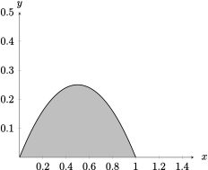
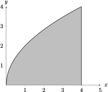
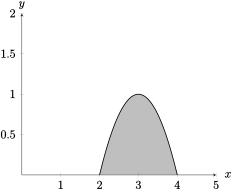

Section 5.3 Volumes by Cylindrical Shells
Objectives
Determine whether the Shell Method, Disk Method, or Washer Method is most appropriate to compute the volume of a solid of revolution, and compute the volume by integrating with respect to \(x\) or \(y\)
Subsection 5.3.1 Before Class
https://mymedia.ou.edu/media/5.3-1/1_fyryg6z8Subsubsection 5.3.1.1 Slicing with Cylinders
Example 5.3.1.
Let \(f(x) = x-x^2\text{.}\)Sketch the region bounded by \(f(x)\) and the \(x-\)axis.
Set up (but do not solve) an integral to find the volume of the solid created by rotating the region about the line \(y = 0\text{.}\) Why can we use the disk method?
Are there problems if we instead rotate about the line \(x = 0\text{?}\) Explain with pictures, words, etc.
- 
The disk method integral is given by \(\ds \int_0^1 \pi (x-x^2)^2\, dx\text{.}\) We may use the disk method because there is no gap between the axis of rotation and the region.
Yes- in an approximating washer, there is no function to create the radius; each input has multiple outputs.
Example 5.3.2.
Again consider \(f(x) = x-x^2\text{.}\)Draw four midpoint rectangles for the area of the region bounded by \(f(x)\) and the \(x-\)axis. Be sure to label things appropriately!
Sketch what happens to the rectangles when rotated about the line \(x = 0\text{.}\)
How can we find the surface area of the shape from part (b)?
Use your answers from parts (b) and (c) to approximate the volume of the solid.
Write an expression that uses “infinitely many” rectangles to approximate the the volume of the solid.
Convert your answer from part (d) into an integral expression, and evaluate it.
The sketch is tough to digitally reproduce, so it is left to the reader.
The sketch is tough to digitally reproduce, so it is left to the reader.
Since the surface area of a cylinder is \(SA = 2\pi rh\text{,}\) we can use the information from any singular cylinder to develop the expression \(SA = 2\pi x_i f(x_i)\text{.}\)
We'll use the width of the approximating rectangle as the thickness of the shell, so that our cylindrical shell's volume is given by \(V = 2\pi x_i f(x_i)\Delta x\text{.}\) So, the volume of the solid is approximated by
\begin{equation*} \ds V\approx \sum_{i=1}^n 2\pi x_i(x_i-x_i^2)\Delta x \end{equation*}- \begin{equation*} \ds V = \lim_{n\to \infty}\sum_{i=1}^n 2\pi x_i(x_i-x_i^2)\Delta x \end{equation*}
- \begin{equation*} \ds V = \int_0^1 2\pi x(x-x^2)\, dx = \dfrac{\pi}{6} \end{equation*}
Subsubsection 5.3.1.2 The Shell Method
Method of Cylindrical Shells.
Let \(f(x)\) be a continuous function on the interval \([a,b]\text{.}\) Then, the volume of the solid created by rotating the region bounded by \(f(x)\) and the \(x-\)axis about the line \(x = 0\) is given by
where \(r(x)\) is the radius function.
Example 5.3.3.
Consider the region bounded by the curve \(y = 2\sqrt{x}\text{,}\) the \(x-\)axis, and the line \(x = 4\text{.}\)Sketch and label the region.
Sketch and label a typical approximating cylinder, when rotated about \(x = 0\text{.}\)
Use the formula for the cylinder to set up an integral for the volume of the resulting solid, then evaluate it.
- 
\(\displaystyle V = \ds \int_0^4 2\pi x(2\sqrt{x})\, dx = \dfrac{256\pi}{5}\)
Subsection 5.3.2 Pre-Class Activities
Example 5.3.4.
If you were presented with a problem, how would you know whether to use the disk method, washer method, or shell method? Examples 1 and 2 might be good places to get ideas.Answers vary
Example 5.3.5.
Find the volume of the solid obtained by rotating the region bouded by \(y = 2x^2 - x^3\) and \(y = 0\) about the \(y-\)axis.\(V =\dfrac{16\pi}{5}\)
Subsection 5.3.3 In Class
Example 5.3.6.
Use the shell method to find the volume of the solid generated by revolving the region bounded by the curves \(xy = 1\text{,}\) \(x = 0\text{,}\) \(y = 1\text{,}\) and \(y = 3\) about the \(x-\)axis. Hint: Sketch the solid and its approximating cylinders.\(4\pi\)
Example 5.3.7.
Find the volume of the solid created by rotating the region bounded by the curves \(y = x^3\text{,}\) \(y = 0\text{,}\) \(x = 1\text{,}\) and \(x = 2\) about the \(y-\)axis. Be sure to label your diagram, if you choose to draw one.\(\dfrac{62\pi}{5}\)
Example 5.3.8.
Find the volume of the solid created by rotating the first-quadrant region bounded by the curves \(y = 4x-x^2\text{,}\) and \(y = x\) about the \(y-\)axis. Be sure to label your diagram, if you choose to draw one.\(\dfrac{27\pi}{2}\)
Example 5.3.9.
Find the volume of the solid created by rotating the region bounded by the curves \(x = 2y^2\text{,}\) \(y\geq 0\text{,}\) and \(x=8\) about \(y = 2\text{.}\) Hint: Draw and label a diagram. Remember that this is a function of \(y\text{,}\) not a function of \(x\text{!}\)\(\dfrac{80\pi}{3}\)
Example 5.3.10.
Find the volume of the solid created by rotating the region bounded by the curves \(y = x^3\text{,}\) \(y = 8\text{,}\) \(x = 0\) about \(x = 2\text{.}\) Be sure to label your diagram, if you choose to draw one.\(\dfrac{144\pi}{5}\)
Subsection 5.3.4 After Class Activities
Example 5.3.11.
Find the volume of the solid created by rotating the region bounded by the curves \(x = 2y^2\text{,}\) \(x = y^2 + 1\) about \(y = -2\text{.}\)\(\dfrac{16\pi}{3}\)
Example 5.3.12.
Sketch the region described in the volume integral below:Example 5.3.13.
The region bounded by the curves \(y = -x^2 + 6x-8\) and \(y = 0\) is rotated about the \(y-\)axis.Sketch the region described above.
Of our three methods, which one do you want to use? Give a quick explanation why you chose that particular method.
Compute the volume of the solid.
- 
Answers vary
\(\displaystyle 8\pi\)
Example 5.3.14.
Consider the region bounded by the curves \(y = 4x\text{,}\) \(y = 0\text{,}\) and \(x = 2\text{.}\) Find the volume of the solid formed when the region is rotated about the given lines:The \(y-\)axis
\(\displaystyle x = 4\)
\(\displaystyle \dfrac{64\pi}{3}\)
\(\displaystyle \dfrac{128\pi}{3}\)